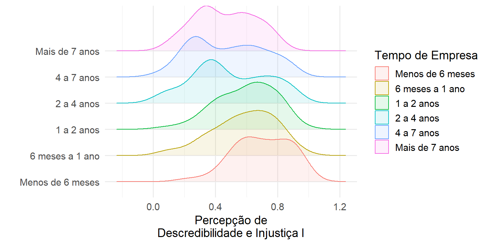
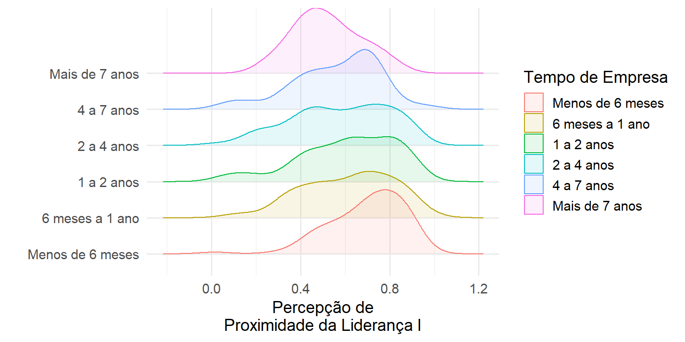
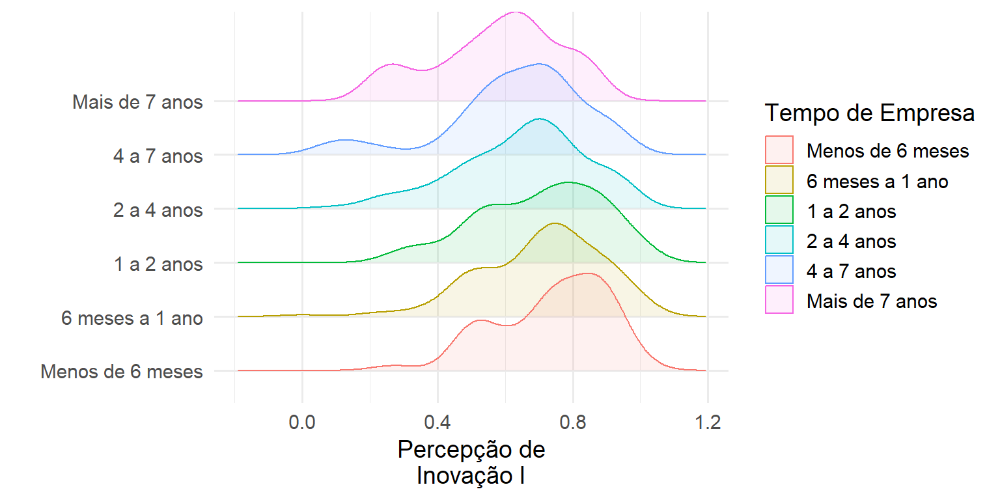

Capítulo 6 Associação entre Construtos e Cortes
6.1 Descredibilidade e Injustiça I
Hipótese: A percepção de Descredibilidade e Injustiça I pode ser diferente entre alguns perfis.
Conclusão: Há evidências que a percepção de Descredibilidade e Injustiça I esteja associada com o tempo de empresa e com o Gênero.
- Quanto maior o tempo de casa, menor a percepção.
- Gênero “Prefiro Não identificar” apresentou menor percepção.
6.1.1 Estatísticas Descritivas

| x4_tempo_de_empresa_ha_quanto_tempo_trabalha_na_inmetrics | N | Média | Desv.Pad. | Mínimo | 1º Quartil | Mediana | 3º Quartil | Máximo |
|---|---|---|---|---|---|---|---|---|
| Menos de 6 meses | 99 | 0.7 | 0.2 | 0.2 | 0.6 | 0.7 | 0.9 | 1.0 |
| 6 meses a 1 ano | 145 | 0.6 | 0.2 | 0.1 | 0.5 | 0.6 | 0.7 | 1.0 |
| 1 a 2 anos | 71 | 0.6 | 0.2 | 0.1 | 0.5 | 0.6 | 0.7 | 1.0 |
| 2 a 4 anos | 137 | 0.5 | 0.2 | 0.0 | 0.3 | 0.4 | 0.7 | 0.9 |
| 4 a 7 anos | 46 | 0.5 | 0.2 | 0.0 | 0.3 | 0.5 | 0.7 | 0.9 |
| Mais de 7 anos | 24 | 0.5 | 0.2 | 0.1 | 0.3 | 0.5 | 0.6 | 0.8 |
| x3_genero | N | Média | Desv.Pad. | Mínimo | 1º Quartil | Mediana | 3º Quartil | Máximo |
|---|---|---|---|---|---|---|---|---|
| Feminino | 144 | 0.5 | 0.2 | 0.1 | 0.4 | 0.5 | 0.7 | 1.0 |
| Masculino | 360 | 0.6 | 0.2 | 0.0 | 0.4 | 0.6 | 0.8 | 1.0 |
| Prefiro não identificar | 18 | 0.4 | 0.2 | 0.1 | 0.3 | 0.3 | 0.5 | 0.9 |
6.1.2 Testes de Hipótese
|
descredibilidade e injustica 1 |
descredibilidade e injustica 1 |
|||||
|---|---|---|---|---|---|---|
| Predictors | Estimates | CI | p | Estimates | CI | p |
| (Intercept) | 0.70 | 0.56 – 0.84 | <0.001 | 0.67 | 0.62 – 0.73 | <0.001 |
| x1_eu_souLíder de equipe | 0.01 | -0.06 – 0.07 | 0.813 | |||
| x1_eu_souLíder de líder | 0.06 | -0.03 – 0.16 | 0.193 | |||
| x2_areaKernel/Segurança e Cloud | 0.14 | 0.00 – 0.28 | 0.050 | |||
| x2_areaOperações | 0.00 | -0.10 – 0.10 | 0.974 | |||
| x2_areaSuportes | -0.02 | -0.13 – 0.09 | 0.709 | |||
| x3_generoMasculino | 0.01 | -0.03 – 0.06 | 0.506 | 0.03 | -0.01 – 0.07 | 0.125 |
| x3_generoPrefiro não identificar | -0.14 | -0.24 – -0.04 | 0.008 | -0.13 | -0.23 – -0.03 | 0.012 |
| 6 meses a 1 ano | -0.10 | -0.15 – -0.04 | <0.001 | -0.10 | -0.16 – -0.05 | <0.001 |
| 1 a 2 anos | -0.09 | -0.16 – -0.03 | 0.005 | -0.10 | -0.16 – -0.04 | 0.002 |
| 2 a 4 anos | -0.19 | -0.25 – -0.14 | <0.001 | -0.20 | -0.25 – -0.14 | <0.001 |
| 4 a 7 anos | -0.20 | -0.28 – -0.12 | <0.001 | -0.21 | -0.28 – -0.14 | <0.001 |
| Mais de 7 anos | -0.26 | -0.35 – -0.16 | <0.001 | -0.23 | -0.33 – -0.14 | <0.001 |
| 36 a 45 anos | -0.05 | -0.14 – 0.05 | 0.326 | |||
| 21 a 25 anos | -0.01 | -0.11 – 0.08 | 0.772 | |||
| 31 a 35 anos | -0.05 | -0.15 – 0.04 | 0.269 | |||
| 26 a 30 anos | -0.01 | -0.10 – 0.09 | 0.893 | |||
| Mais de 45 anos | 0.04 | -0.07 – 0.14 | 0.496 | |||
| x6_alocacaoNo Canopus | -0.00 | -0.04 – 0.04 | 0.949 | |||
| x6_alocacaoNo Thera | 0.01 | -0.07 – 0.08 | 0.867 | |||
| Observations | 522 | 522 | ||||
| Nagelkerke’s R2 | 0.176 | 0.147 | ||||
6.2 Descredibilidade e Injustiça II
Hipótese: A percepção de Descredibilidade e Injustiça II pode ser diferente entre alguns perfis.
Conclusão: Há evidências que a percepção de Descredibilidade e Injustiça II esteja associada com o tempo de empresa e com o Gênero.
- Quanto maior o tempo de casa, menor a percepção.
- Líderes de líder apresentou menor percepção.
6.2.1 Estatísticas Descritivas
| x4_tempo_de_empresa_ha_quanto_tempo_trabalha_na_inmetrics | N | Média | Desv.Pad. | Mínimo | 1º Quartil | Mediana | 3º Quartil | Máximo |
|---|---|---|---|---|---|---|---|---|
| Menos de 6 meses | 99 | 0.7 | 0.2 | 0.0 | 0.7 | 0.7 | 0.9 | 1.0 |
| 6 meses a 1 ano | 145 | 0.6 | 0.2 | 0.0 | 0.5 | 0.7 | 0.7 | 1.0 |
| 1 a 2 anos | 71 | 0.6 | 0.2 | 0.0 | 0.5 | 0.7 | 0.7 | 1.0 |
| 2 a 4 anos | 137 | 0.6 | 0.2 | 0.0 | 0.5 | 0.7 | 0.8 | 1.0 |
| 4 a 7 anos | 46 | 0.6 | 0.2 | 0.1 | 0.5 | 0.5 | 0.7 | 1.0 |
| Mais de 7 anos | 24 | 0.6 | 0.2 | 0.3 | 0.5 | 0.5 | 0.7 | 0.9 |
| x1_eu_sou | N | Média | Desv.Pad. | Mínimo | 1º Quartil | Mediana | 3º Quartil | Máximo |
|---|---|---|---|---|---|---|---|---|
| Colaborador | 445 | 0.6 | 0.2 | 0.0 | 0.5 | 0.7 | 0.9 | 1.0 |
| Líder de equipe | 52 | 0.6 | 0.2 | 0.2 | 0.5 | 0.7 | 0.7 | 1.0 |
| Líder de líder | 25 | 0.5 | 0.2 | 0.0 | 0.3 | 0.5 | 0.7 | 0.8 |
6.2.2 Testes de Hipótese
|
descredibilidade e injustica 2 |
descredibilidade e injustica 2 |
|||||
|---|---|---|---|---|---|---|
| Predictors | Estimates | CI | p | Estimates | CI | p |
| (Intercept) | 0.77 | 0.62 – 0.92 | <0.001 | 0.72 | 0.68 – 0.76 | <0.001 |
| x1_eu_souLíder de equipe | -0.01 | -0.08 – 0.06 | 0.811 | -0.00 | -0.07 – 0.06 | 0.889 |
| x1_eu_souLíder de líder | -0.17 | -0.28 – -0.07 | 0.001 | -0.14 | -0.24 – -0.05 | 0.003 |
| x2_areaKernel/Segurança e Cloud | -0.09 | -0.24 – 0.06 | 0.262 | |||
| x2_areaOperações | -0.06 | -0.17 – 0.04 | 0.246 | |||
| x2_areaSuportes | -0.01 | -0.13 – 0.11 | 0.912 | |||
| x3_generoMasculino | -0.01 | -0.06 – 0.03 | 0.581 | |||
| x3_generoPrefiro não identificar | -0.03 | -0.14 – 0.08 | 0.583 | |||
| 6 meses a 1 ano | -0.09 | -0.15 – -0.04 | 0.001 | -0.10 | -0.16 – -0.04 | 0.001 |
| 1 a 2 anos | -0.11 | -0.18 – -0.04 | 0.002 | -0.10 | -0.17 – -0.03 | 0.004 |
| 2 a 4 anos | -0.08 | -0.14 – -0.02 | 0.009 | -0.07 | -0.12 – -0.01 | 0.023 |
| 4 a 7 anos | -0.13 | -0.21 – -0.04 | 0.003 | -0.13 | -0.21 – -0.05 | 0.002 |
| Mais de 7 anos | -0.09 | -0.20 – 0.01 | 0.091 | -0.09 | -0.19 – 0.02 | 0.104 |
| 36 a 45 anos | 0.03 | -0.07 – 0.13 | 0.531 | |||
| 21 a 25 anos | 0.02 | -0.08 – 0.12 | 0.739 | |||
| 31 a 35 anos | -0.01 | -0.11 – 0.10 | 0.897 | |||
| 26 a 30 anos | 0.00 | -0.10 – 0.11 | 0.946 | |||
| Mais de 45 anos | 0.04 | -0.07 – 0.16 | 0.450 | |||
| x6_alocacaoNo Canopus | 0.02 | -0.02 – 0.07 | 0.266 | |||
| x6_alocacaoNo Thera | -0.04 | -0.12 – 0.04 | 0.338 | |||
| Observations | 522 | 522 | ||||
| Nagelkerke’s R2 | 0.079 | 0.055 | ||||
6.3 Despreparo da Liderança I
Hipótese: A percepção de Despreparo da Liderança I pode ser diferente entre alguns perfis.
Conclusão:
6.3.1 Estatísticas Descritivas
| x4_tempo_de_empresa_ha_quanto_tempo_trabalha_na_inmetrics | N | Média | Desv.Pad. | Mínimo | 1º Quartil | Mediana | 3º Quartil | Máximo |
|---|---|---|---|---|---|---|---|---|
| Menos de 6 meses | 99 | 0.7 | 0.2 | 0.0 | 0.6 | 0.7 | 0.8 | 1.0 |
| 6 meses a 1 ano | 145 | 0.6 | 0.2 | 0.0 | 0.4 | 0.6 | 0.7 | 1.0 |
| 1 a 2 anos | 71 | 0.6 | 0.2 | 0.1 | 0.5 | 0.6 | 0.8 | 1.0 |
| 2 a 4 anos | 137 | 0.5 | 0.2 | 0.1 | 0.4 | 0.5 | 0.7 | 0.9 |
| 4 a 7 anos | 46 | 0.5 | 0.2 | 0.1 | 0.4 | 0.5 | 0.7 | 0.8 |
| Mais de 7 anos | 24 | 0.5 | 0.2 | 0.2 | 0.4 | 0.5 | 0.6 | 0.7 |
6.3.2 Testes de Hipótese
| despreparo da lideranca 1 | despreparo da lideranca 1 | |||||
|---|---|---|---|---|---|---|
| Predictors | Estimates | CI | p | Estimates | CI | p |
| (Intercept) | 0.77 | 0.65 – 0.90 | <0.001 | 0.69 | 0.65 – 0.73 | <0.001 |
| x1_eu_souLíder de equipe | -0.01 | -0.07 – 0.04 | 0.635 | |||
| x1_eu_souLíder de líder | -0.08 | -0.17 – 0.01 | 0.067 | |||
| x2_areaKernel/Segurança e Cloud | -0.01 | -0.14 – 0.12 | 0.835 | |||
| x2_areaOperações | -0.04 | -0.13 – 0.05 | 0.409 | |||
| x2_areaSuportes | -0.04 | -0.14 – 0.06 | 0.458 | |||
| x3_generoMasculino | -0.00 | -0.04 – 0.03 | 0.827 | |||
| x3_generoPrefiro não identificar | -0.12 | -0.21 – -0.02 | 0.017 | |||
| 6 meses a 1 ano | -0.10 | -0.15 – -0.05 | <0.001 | -0.10 | -0.15 – -0.05 | <0.001 |
| 1 a 2 anos | -0.09 | -0.15 – -0.03 | 0.002 | -0.09 | -0.15 – -0.04 | 0.002 |
| 2 a 4 anos | -0.16 | -0.21 – -0.11 | <0.001 | -0.17 | -0.22 – -0.12 | <0.001 |
| 4 a 7 anos | -0.16 | -0.23 – -0.08 | <0.001 | -0.19 | -0.26 – -0.12 | <0.001 |
| Mais de 7 anos | -0.18 | -0.27 – -0.09 | <0.001 | -0.22 | -0.30 – -0.13 | <0.001 |
| 36 a 45 anos | -0.06 | -0.15 – 0.03 | 0.188 | |||
| 21 a 25 anos | -0.02 | -0.11 – 0.07 | 0.659 | |||
| 31 a 35 anos | -0.08 | -0.17 – 0.01 | 0.079 | |||
| 26 a 30 anos | -0.04 | -0.13 – 0.05 | 0.375 | |||
| Mais de 45 anos | 0.03 | -0.06 – 0.13 | 0.507 | |||
| x6_alocacaoNo Canopus | -0.00 | -0.04 – 0.03 | 0.850 | |||
| x6_alocacaoNo Thera | -0.04 | -0.11 – 0.03 | 0.265 | |||
| Observations | 522 | 522 | ||||
| Nagelkerke’s R2 | 0.149 | 0.106 | ||||
6.4 Despreparo da Liderança II
Hipótese: A percepção de Despreparo da Liderança II pode ser diferente entre alguns perfis.
Conclusão:
6.4.1 Estatísticas Descritivas
| x4_tempo_de_empresa_ha_quanto_tempo_trabalha_na_inmetrics | N | Média | Desv.Pad. | Mínimo | 1º Quartil | Mediana | 3º Quartil | Máximo |
|---|---|---|---|---|---|---|---|---|
| Menos de 6 meses | 99 | 0.7 | 0.2 | 0.0 | 0.6 | 0.7 | 0.8 | 1.0 |
| 6 meses a 1 ano | 145 | 0.6 | 0.2 | 0.0 | 0.5 | 0.7 | 0.8 | 1.0 |
| 1 a 2 anos | 71 | 0.6 | 0.2 | 0.1 | 0.4 | 0.6 | 0.8 | 0.9 |
| 2 a 4 anos | 137 | 0.6 | 0.2 | 0.0 | 0.5 | 0.6 | 0.7 | 1.0 |
| 4 a 7 anos | 46 | 0.6 | 0.2 | 0.0 | 0.5 | 0.6 | 0.8 | 0.9 |
| Mais de 7 anos | 24 | 0.6 | 0.2 | 0.0 | 0.5 | 0.6 | 0.7 | 0.9 |
6.4.2 Testes de Hipótese
| despreparo da lideranca 2 | despreparo da lideranca 2 | |||||
|---|---|---|---|---|---|---|
| Predictors | Estimates | CI | p | Estimates | CI | p |
| (Intercept) | 0.63 | 0.50 – 0.76 | <0.001 | 0.66 | 0.62 – 0.70 | <0.001 |
| x1_eu_souLíder de equipe | 0.05 | -0.02 – 0.11 | 0.146 | |||
| x1_eu_souLíder de líder | 0.03 | -0.06 – 0.13 | 0.472 | |||
| x2_areaKernel/Segurança e Cloud | 0.12 | -0.02 – 0.25 | 0.100 | |||
| x2_areaOperações | 0.00 | -0.09 – 0.10 | 0.953 | |||
| x2_areaSuportes | 0.01 | -0.10 – 0.12 | 0.908 | |||
| x3_generoMasculino | -0.02 | -0.06 – 0.02 | 0.419 | |||
| x3_generoPrefiro não identificar | -0.03 | -0.13 – 0.07 | 0.605 | |||
| 6 meses a 1 ano | -0.03 | -0.08 – 0.02 | 0.268 | -0.04 | -0.09 – 0.01 | 0.149 |
| 1 a 2 anos | -0.05 | -0.11 – 0.01 | 0.127 | -0.06 | -0.12 – 0.00 | 0.071 |
| 2 a 4 anos | -0.06 | -0.12 – -0.01 | 0.025 | -0.07 | -0.12 – -0.01 | 0.014 |
| 4 a 7 anos | -0.07 | -0.15 – 0.00 | 0.065 | -0.07 | -0.14 – 0.00 | 0.055 |
| Mais de 7 anos | -0.12 | -0.22 – -0.02 | 0.018 | -0.08 | -0.18 – 0.01 | 0.067 |
| 36 a 45 anos | 0.02 | -0.08 – 0.11 | 0.719 | |||
| 21 a 25 anos | 0.01 | -0.08 – 0.10 | 0.815 | |||
| 31 a 35 anos | -0.01 | -0.11 – 0.08 | 0.787 | |||
| 26 a 30 anos | 0.03 | -0.06 – 0.13 | 0.463 | |||
| Mais de 45 anos | 0.00 | -0.10 – 0.11 | 0.929 | |||
| x6_alocacaoNo Canopus | 0.02 | -0.02 – 0.06 | 0.348 | |||
| x6_alocacaoNo Thera | 0.07 | -0.00 – 0.15 | 0.065 | |||
| Observations | 522 | 522 | ||||
| Nagelkerke’s R2 | 0.046 | 0.016 | ||||
6.5 Baixo Preparo da Empresa Para Exercer Função
Hipótese: A percepção de Baixo Preparo da Empresa Para Exercer Função pode ser diferente entre alguns perfis.
Conclusão: Há evidências que a percepção de Baixo Preparo da Empresa Para Exercer Função esteja associada com o tempo de empresa, com o gênero e com posição.
- Quanto maior o tempo de casa, menor a percepção.
- Líderes de líder apresentaram menor percepção.
- Gênero “Prefiro Não identificar” apresentou menor percepção.
6.5.1 Estatísticas Descritivas
| x4_tempo_de_empresa_ha_quanto_tempo_trabalha_na_inmetrics | N | Média | Desv.Pad. | Mínimo | 1º Quartil | Mediana | 3º Quartil | Máximo |
|---|---|---|---|---|---|---|---|---|
| Menos de 6 meses | 99 | 0.8 | 0.2 | 0.3 | 0.6 | 0.8 | 0.9 | 1.0 |
| 6 meses a 1 ano | 145 | 0.6 | 0.2 | 0.0 | 0.5 | 0.7 | 0.8 | 1.0 |
| 1 a 2 anos | 71 | 0.7 | 0.2 | 0.1 | 0.5 | 0.7 | 0.8 | 1.0 |
| 2 a 4 anos | 137 | 0.6 | 0.2 | 0.0 | 0.4 | 0.6 | 0.8 | 1.0 |
| 4 a 7 anos | 46 | 0.6 | 0.2 | 0.1 | 0.4 | 0.6 | 0.8 | 0.9 |
| Mais de 7 anos | 24 | 0.5 | 0.2 | 0.3 | 0.4 | 0.5 | 0.6 | 0.9 |
| x1_eu_sou | N | Média | Desv.Pad. | Mínimo | 1º Quartil | Mediana | 3º Quartil | Máximo |
|---|---|---|---|---|---|---|---|---|
| Colaborador | 445 | 0.7 | 0.2 | 0.0 | 0.5 | 0.7 | 0.8 | 1.0 |
| Líder de equipe | 52 | 0.6 | 0.2 | 0.1 | 0.4 | 0.6 | 0.8 | 0.9 |
| Líder de líder | 25 | 0.5 | 0.2 | 0.2 | 0.3 | 0.5 | 0.6 | 0.9 |
| x3_genero | N | Média | Desv.Pad. | Mínimo | 1º Quartil | Mediana | 3º Quartil | Máximo |
|---|---|---|---|---|---|---|---|---|
| Feminino | 144 | 0.7 | 0.2 | 0.0 | 0.5 | 0.7 | 0.8 | 1 |
| Masculino | 360 | 0.7 | 0.2 | 0.0 | 0.5 | 0.7 | 0.8 | 1 |
| Prefiro não identificar | 18 | 0.5 | 0.3 | 0.1 | 0.3 | 0.4 | 0.7 | 1 |
6.5.2 Testes de Hipótese
|
baixo preparo da empresa para exercer funcao 1 |
baixo preparo da empresa para exercer funcao 1 |
|||||
|---|---|---|---|---|---|---|
| Predictors | Estimates | CI | p | Estimates | CI | p |
| (Intercept) | 0.83 | 0.69 – 0.97 | <0.001 | 0.76 | 0.71 – 0.82 | <0.001 |
| x1_eu_souLíder de equipe | -0.02 | -0.09 – 0.04 | 0.502 | -0.04 | -0.10 – 0.03 | 0.263 |
| x1_eu_souLíder de líder | -0.14 | -0.24 – -0.04 | 0.007 | -0.13 | -0.22 – -0.04 | 0.005 |
| x2_areaKernel/Segurança e Cloud | -0.03 | -0.18 – 0.11 | 0.667 | |||
| x2_areaOperações | -0.03 | -0.14 – 0.07 | 0.504 | |||
| x2_areaSuportes | -0.03 | -0.14 – 0.09 | 0.629 | |||
| x3_generoMasculino | -0.01 | -0.06 – 0.03 | 0.555 | -0.01 | -0.05 – 0.03 | 0.696 |
| x3_generoPrefiro não identificar | -0.13 | -0.24 – -0.03 | 0.013 | -0.12 | -0.23 – -0.02 | 0.021 |
| 6 meses a 1 ano | -0.10 | -0.16 – -0.04 | <0.001 | -0.10 | -0.15 – -0.04 | <0.001 |
| 1 a 2 anos | -0.09 | -0.16 – -0.03 | 0.006 | -0.09 | -0.15 – -0.02 | 0.008 |
| 2 a 4 anos | -0.13 | -0.19 – -0.07 | <0.001 | -0.13 | -0.18 – -0.07 | <0.001 |
| 4 a 7 anos | -0.13 | -0.21 – -0.05 | 0.001 | -0.15 | -0.23 – -0.07 | <0.001 |
| Mais de 7 anos | -0.18 | -0.28 – -0.07 | 0.001 | -0.18 | -0.28 – -0.08 | 0.001 |
| 36 a 45 anos | -0.04 | -0.14 – 0.06 | 0.429 | |||
| 21 a 25 anos | -0.00 | -0.10 – 0.09 | 0.942 | |||
| 31 a 35 anos | -0.08 | -0.18 – 0.02 | 0.098 | |||
| 26 a 30 anos | -0.04 | -0.14 – 0.06 | 0.427 | |||
| Mais de 45 anos | 0.02 | -0.09 – 0.12 | 0.761 | |||
| x6_alocacaoNo Canopus | 0.00 | -0.04 – 0.05 | 0.862 | |||
| x6_alocacaoNo Thera | -0.04 | -0.11 – 0.04 | 0.381 | |||
| Observations | 522 | 522 | ||||
| Nagelkerke’s R2 | 0.120 | 0.098 | ||||
6.6 Planejamento e Método
Hipótese: A percepção de Planejamento e Método pode ser diferente entre alguns perfis.
Conclusão: Há evidências que a percepção de Planejamento e Método esteja associada com o tempo de empresa e com posição.
- Quanto maior o tempo de casa, menor a percepção.
- Líderes de líder apresentaram menor percepção.
6.6.1 Estatísticas Descritivas
| x4_tempo_de_empresa_ha_quanto_tempo_trabalha_na_inmetrics | N | Média | Desv.Pad. | Mínimo | 1º Quartil | Mediana | 3º Quartil | Máximo |
|---|---|---|---|---|---|---|---|---|
| Menos de 6 meses | 99 | 0.6 | 0.2 | 0.1 | 0.5 | 0.7 | 0.8 | 1.0 |
| 6 meses a 1 ano | 145 | 0.6 | 0.2 | 0.1 | 0.4 | 0.6 | 0.7 | 0.9 |
| 1 a 2 anos | 71 | 0.6 | 0.2 | 0.1 | 0.5 | 0.6 | 0.7 | 0.9 |
| 2 a 4 anos | 137 | 0.6 | 0.2 | 0.0 | 0.4 | 0.6 | 0.7 | 0.9 |
| 4 a 7 anos | 46 | 0.5 | 0.2 | 0.2 | 0.4 | 0.6 | 0.7 | 0.8 |
| Mais de 7 anos | 24 | 0.5 | 0.1 | 0.3 | 0.4 | 0.5 | 0.6 | 0.8 |
| x1_eu_sou | N | Média | Desv.Pad. | Mínimo | 1º Quartil | Mediana | 3º Quartil | Máximo |
|---|---|---|---|---|---|---|---|---|
| Colaborador | 445 | 0.6 | 0.2 | 0.0 | 0.5 | 0.6 | 0.7 | 1.0 |
| Líder de equipe | 52 | 0.6 | 0.2 | 0.2 | 0.5 | 0.6 | 0.7 | 0.9 |
| Líder de líder | 25 | 0.5 | 0.1 | 0.2 | 0.4 | 0.4 | 0.6 | 0.7 |
6.6.2 Testes de Hipótese
| planejamento e metodo 1 | planejamento e metodo 1 | |||||
|---|---|---|---|---|---|---|
| Predictors | Estimates | CI | p | Estimates | CI | p |
| (Intercept) | 0.67 | 0.55 – 0.79 | <0.001 | 0.64 | 0.60 – 0.67 | <0.001 |
| x1_eu_souLíder de equipe | 0.01 | -0.05 – 0.06 | 0.817 | 0.01 | -0.05 – 0.06 | 0.782 |
| x1_eu_souLíder de líder | -0.13 | -0.21 – -0.05 | 0.002 | -0.11 | -0.18 – -0.03 | 0.005 |
| x2_areaKernel/Segurança e Cloud | -0.02 | -0.14 – 0.10 | 0.700 | |||
| x2_areaOperações | -0.04 | -0.13 – 0.04 | 0.307 | |||
| x2_areaSuportes | -0.01 | -0.11 – 0.08 | 0.769 | |||
| x3_generoMasculino | -0.01 | -0.04 – 0.03 | 0.581 | |||
| x3_generoPrefiro não identificar | -0.06 | -0.14 – 0.03 | 0.207 | |||
| 6 meses a 1 ano | -0.07 | -0.12 – -0.03 | 0.002 | -0.08 | -0.12 – -0.03 | 0.001 |
| 1 a 2 anos | -0.08 | -0.13 – -0.02 | 0.005 | -0.07 | -0.13 – -0.02 | 0.008 |
| 2 a 4 anos | -0.08 | -0.13 – -0.04 | 0.001 | -0.08 | -0.12 – -0.03 | 0.001 |
| 4 a 7 anos | -0.08 | -0.15 – -0.02 | 0.012 | -0.09 | -0.16 – -0.03 | 0.005 |
| Mais de 7 anos | -0.11 | -0.19 – -0.02 | 0.012 | -0.11 | -0.19 – -0.02 | 0.012 |
| 36 a 45 anos | 0.02 | -0.06 – 0.10 | 0.605 | |||
| 21 a 25 anos | 0.02 | -0.06 – 0.10 | 0.642 | |||
| 31 a 35 anos | -0.01 | -0.09 – 0.07 | 0.832 | |||
| 26 a 30 anos | 0.00 | -0.08 – 0.08 | 0.952 | |||
| Mais de 45 anos | 0.05 | -0.04 – 0.14 | 0.247 | |||
| x6_alocacaoNo Canopus | 0.01 | -0.02 – 0.04 | 0.537 | |||
| x6_alocacaoNo Thera | -0.04 | -0.10 – 0.03 | 0.257 | |||
| Observations | 522 | 522 | ||||
| Nagelkerke’s R2 | 0.077 | 0.054 | ||||
6.7 Ausência de Meritocracia
Hipótese: A percepção de Ausência de Meritocracia pode ser diferente entre alguns perfis.
Conclusão: Há evidências que a percepção de Ausência de Meritocracia esteja associada com o tempo de empresa e com gênero.
- Quanto maior o tempo de casa, menor a percepção.
- Gênero “Prefiro Não identificar” apresentou menor percepção.
6.7.1 Estatísticas Descritivas
| x4_tempo_de_empresa_ha_quanto_tempo_trabalha_na_inmetrics | N | Média | Desv.Pad. | Mínimo | 1º Quartil | Mediana | 3º Quartil | Máximo |
|---|---|---|---|---|---|---|---|---|
| Menos de 6 meses | 99 | 0.7 | 0.2 | 0.1 | 0.5 | 0.6 | 0.8 | 1.0 |
| 6 meses a 1 ano | 145 | 0.5 | 0.2 | 0.0 | 0.4 | 0.5 | 0.7 | 1.0 |
| 1 a 2 anos | 71 | 0.5 | 0.2 | 0.0 | 0.4 | 0.6 | 0.7 | 1.0 |
| 2 a 4 anos | 137 | 0.4 | 0.3 | 0.0 | 0.2 | 0.4 | 0.7 | 1.0 |
| 4 a 7 anos | 46 | 0.4 | 0.3 | 0.0 | 0.2 | 0.4 | 0.6 | 0.9 |
| Mais de 7 anos | 24 | 0.4 | 0.2 | 0.0 | 0.3 | 0.4 | 0.6 | 0.8 |
| x3_genero | N | Média | Desv.Pad. | Mínimo | 1º Quartil | Mediana | 3º Quartil | Máximo |
|---|---|---|---|---|---|---|---|---|
| Feminino | 144 | 0.5 | 0.3 | 0 | 0.3 | 0.5 | 0.7 | 1 |
| Masculino | 360 | 0.5 | 0.2 | 0 | 0.4 | 0.5 | 0.7 | 1 |
| Prefiro não identificar | 18 | 0.3 | 0.3 | 0 | 0.1 | 0.3 | 0.4 | 1 |
6.7.2 Testes de Hipótese
|
ausencia de meritocracia 1 |
ausencia de meritocracia 1 |
|||||
|---|---|---|---|---|---|---|
| Predictors | Estimates | CI | p | Estimates | CI | p |
| (Intercept) | 0.69 | 0.53 – 0.85 | <0.001 | 0.65 | 0.59 – 0.71 | <0.001 |
| x1_eu_souLíder de equipe | 0.01 | -0.07 – 0.08 | 0.809 | |||
| x1_eu_souLíder de líder | 0.04 | -0.08 – 0.15 | 0.527 | |||
| x2_areaKernel/Segurança e Cloud | 0.13 | -0.04 – 0.29 | 0.128 | |||
| x2_areaOperações | -0.02 | -0.13 – 0.10 | 0.756 | |||
| x2_areaSuportes | -0.03 | -0.16 – 0.10 | 0.654 | |||
| x3_generoMasculino | 0.02 | -0.03 – 0.07 | 0.415 | 0.04 | -0.01 – 0.08 | 0.124 |
| x3_generoPrefiro não identificar | -0.14 | -0.26 – -0.02 | 0.022 | -0.13 | -0.25 – -0.01 | 0.032 |
| 6 meses a 1 ano | -0.13 | -0.19 – -0.06 | <0.001 | -0.13 | -0.19 – -0.07 | <0.001 |
| 1 a 2 anos | -0.13 | -0.21 – -0.06 | <0.001 | -0.14 | -0.21 – -0.06 | <0.001 |
| 2 a 4 anos | -0.22 | -0.28 – -0.15 | <0.001 | -0.22 | -0.28 – -0.16 | <0.001 |
| 4 a 7 anos | -0.25 | -0.34 – -0.16 | <0.001 | -0.26 | -0.35 – -0.18 | <0.001 |
| Mais de 7 anos | -0.29 | -0.40 – -0.17 | <0.001 | -0.27 | -0.37 – -0.16 | <0.001 |
| 36 a 45 anos | -0.04 | -0.15 – 0.07 | 0.444 | |||
| 21 a 25 anos | -0.01 | -0.12 – 0.10 | 0.909 | |||
| 31 a 35 anos | -0.07 | -0.18 – 0.04 | 0.214 | |||
| 26 a 30 anos | -0.01 | -0.12 – 0.10 | 0.856 | |||
| Mais de 45 anos | 0.05 | -0.07 – 0.17 | 0.416 | |||
| x6_alocacaoNo Canopus | 0.01 | -0.04 – 0.06 | 0.742 | |||
| x6_alocacaoNo Thera | -0.00 | -0.09 – 0.09 | 0.955 | |||
| Observations | 522 | 522 | ||||
| Nagelkerke’s R2 | 0.168 | 0.141 | ||||
6.8 Proximidade da Liderança I
Hipótese: A percepção de Proximidade da Liderança I pode ser diferente entre alguns perfis.
Conclusão: Há evidências que a percepção de Proximidade da Liderança I esteja associada com o tempo de empresa e com posição.
- Quanto maior o tempo de casa, menor a percepção.
- Líderes de líder apresentaram menor percepção.
6.8.1 Estatísticas Descritivas

| x4_tempo_de_empresa_ha_quanto_tempo_trabalha_na_inmetrics | N | Média | Desv.Pad. | Mínimo | 1º Quartil | Mediana | 3º Quartil | Máximo |
|---|---|---|---|---|---|---|---|---|
| Menos de 6 meses | 99 | 0.7 | 0.2 | 0.0 | 0.6 | 0.7 | 0.8 | 0.9 |
| 6 meses a 1 ano | 145 | 0.6 | 0.2 | 0.1 | 0.5 | 0.6 | 0.8 | 1.0 |
| 1 a 2 anos | 71 | 0.6 | 0.2 | 0.1 | 0.5 | 0.6 | 0.8 | 0.9 |
| 2 a 4 anos | 137 | 0.6 | 0.2 | 0.0 | 0.4 | 0.6 | 0.8 | 0.9 |
| 4 a 7 anos | 46 | 0.6 | 0.2 | 0.1 | 0.4 | 0.6 | 0.7 | 1.0 |
| Mais de 7 anos | 24 | 0.5 | 0.1 | 0.3 | 0.4 | 0.5 | 0.6 | 0.8 |
| x4_tempo_de_empresa_ha_quanto_tempo_trabalha_na_inmetrics | N | Média | Desv.Pad. | Mínimo | 1º Quartil | Mediana | 3º Quartil | Máximo |
|---|---|---|---|---|---|---|---|---|
| Menos de 6 meses | 99 | 0.7 | 0.2 | 0.0 | 0.6 | 0.7 | 0.8 | 0.9 |
| 6 meses a 1 ano | 145 | 0.6 | 0.2 | 0.1 | 0.5 | 0.6 | 0.8 | 1.0 |
| 1 a 2 anos | 71 | 0.6 | 0.2 | 0.1 | 0.5 | 0.6 | 0.8 | 0.9 |
| 2 a 4 anos | 137 | 0.6 | 0.2 | 0.0 | 0.4 | 0.6 | 0.8 | 0.9 |
| 4 a 7 anos | 46 | 0.6 | 0.2 | 0.1 | 0.4 | 0.6 | 0.7 | 1.0 |
| Mais de 7 anos | 24 | 0.5 | 0.1 | 0.3 | 0.4 | 0.5 | 0.6 | 0.8 |
6.8.2 Testes de Hipótese
|
proximidade da lideranca 1 |
proximidade da lideranca 1 |
|||||
|---|---|---|---|---|---|---|
| Predictors | Estimates | CI | p | Estimates | CI | p |
| (Intercept) | 0.81 | 0.67 – 0.95 | <0.001 | 0.70 | 0.66 – 0.74 | <0.001 |
| x1_eu_souLíder de equipe | -0.02 | -0.09 – 0.04 | 0.501 | -0.03 | -0.10 – 0.03 | 0.292 |
| x1_eu_souLíder de líder | -0.15 | -0.25 – -0.05 | 0.002 | -0.14 | -0.23 – -0.06 | 0.001 |
| x2_areaKernel/Segurança e Cloud | -0.06 | -0.21 – 0.08 | 0.372 | |||
| x2_areaOperações | -0.03 | -0.13 – 0.06 | 0.486 | |||
| x2_areaSuportes | -0.02 | -0.13 – 0.09 | 0.763 | |||
| x3_generoMasculino | -0.02 | -0.06 – 0.03 | 0.477 | |||
| x3_generoPrefiro não identificar | -0.08 | -0.18 – 0.02 | 0.135 | |||
| 6 meses a 1 ano | -0.08 | -0.13 – -0.02 | 0.005 | -0.08 | -0.14 – -0.03 | 0.002 |
| 1 a 2 anos | -0.09 | -0.15 – -0.02 | 0.010 | -0.09 | -0.15 – -0.02 | 0.008 |
| 2 a 4 anos | -0.11 | -0.17 – -0.05 | <0.001 | -0.11 | -0.17 – -0.06 | <0.001 |
| 4 a 7 anos | -0.10 | -0.18 – -0.02 | 0.019 | -0.11 | -0.19 – -0.03 | 0.005 |
| Mais de 7 anos | -0.12 | -0.22 – -0.02 | 0.015 | -0.14 | -0.23 – -0.04 | 0.005 |
| 36 a 45 anos | -0.08 | -0.18 – 0.02 | 0.113 | |||
| 21 a 25 anos | -0.05 | -0.15 – 0.05 | 0.305 | |||
| 31 a 35 anos | -0.10 | -0.19 – 0.00 | 0.058 | |||
| 26 a 30 anos | -0.07 | -0.17 – 0.02 | 0.145 | |||
| Mais de 45 anos | -0.03 | -0.13 – 0.08 | 0.631 | |||
| x6_alocacaoNo Canopus | 0.00 | -0.04 – 0.04 | 0.969 | |||
| x6_alocacaoNo Thera | -0.02 | -0.09 – 0.06 | 0.662 | |||
| Observations | 469 | 469 | ||||
| Nagelkerke’s R2 | 0.101 | 0.080 | ||||
6.9 Proximidade da Liderança II
Hipótese: A percepção de Proximidade da Liderança II pode ser diferente entre alguns perfis.
Conclusão: Há evidências que a percepção de Proximidade da Liderança II esteja associada com a alocação.
- Funcionários do Canopus apresentaram maior percepção.
6.9.1 Estatísticas Descritivas
| x6_alocacao | N | Média | Desv.Pad. | Mínimo | 1º Quartil | Mediana | 3º Quartil | Máximo |
|---|---|---|---|---|---|---|---|---|
| Alocado no cliente | 288 | 0.7 | 0.3 | 0.0 | 0.5 | 0.7 | 0.9 | 1 |
| No Canopus | 201 | 0.7 | 0.2 | 0.0 | 0.7 | 0.9 | 0.9 | 1 |
| No Thera | 33 | 0.7 | 0.2 | 0.3 | 0.5 | 0.7 | 0.9 | 1 |
6.9.2 Testes de Hipótese
|
proximidade da lideranca 2 |
proximidade da lideranca 2 |
|||||
|---|---|---|---|---|---|---|
| Predictors | Estimates | CI | p | Estimates | CI | p |
| (Intercept) | 0.75 | 0.58 – 0.92 | <0.001 | 0.68 | 0.65 – 0.71 | <0.001 |
| x1_eu_souLíder de equipe | 0.05 | -0.03 – 0.13 | 0.213 | |||
| x1_eu_souLíder de líder | 0.08 | -0.04 – 0.20 | 0.172 | |||
| x2_areaKernel/Segurança e Cloud | 0.07 | -0.10 – 0.25 | 0.409 | |||
| x2_areaOperações | -0.06 | -0.18 – 0.06 | 0.329 | |||
| x2_areaSuportes | -0.07 | -0.20 – 0.07 | 0.329 | |||
| x3_generoMasculino | -0.01 | -0.06 – 0.04 | 0.644 | |||
| x3_generoPrefiro não identificar | 0.05 | -0.07 – 0.17 | 0.393 | |||
| 6 meses a 1 ano | -0.02 | -0.09 – 0.04 | 0.491 | |||
| 1 a 2 anos | -0.04 | -0.12 – 0.04 | 0.338 | |||
| 2 a 4 anos | -0.08 | -0.15 – -0.01 | 0.026 | |||
| 4 a 7 anos | -0.07 | -0.17 – 0.03 | 0.162 | |||
| Mais de 7 anos | -0.15 | -0.27 – -0.03 | 0.014 | |||
| 36 a 45 anos | 0.04 | -0.08 – 0.16 | 0.496 | |||
| 21 a 25 anos | -0.00 | -0.12 – 0.12 | 0.979 | |||
| 31 a 35 anos | -0.01 | -0.13 – 0.12 | 0.933 | |||
| 26 a 30 anos | 0.06 | -0.06 – 0.18 | 0.353 | |||
| Mais de 45 anos | 0.09 | -0.04 – 0.22 | 0.161 | |||
| x6_alocacaoNo Canopus | 0.06 | 0.01 – 0.11 | 0.014 | 0.06 | 0.02 – 0.11 | 0.007 |
| x6_alocacaoNo Thera | 0.03 | -0.07 – 0.12 | 0.555 | 0.03 | -0.06 – 0.12 | 0.534 |
| Observations | 469 | 469 | ||||
| Nagelkerke’s R2 | 0.065 | 0.016 | ||||
6.10 Visão do Propósito Comum
Hipótese: A percepção de Visão do Propósito Comum pode ser diferente entre alguns perfis.
Conclusão: Há evidências que a percepção de Visão do Propósito Comum esteja associada com o tempo de empresa.
- Quanto maior o tempo de casa, menor a percepção.
6.10.1 Estatísticas Descritivas
| x4_tempo_de_empresa_ha_quanto_tempo_trabalha_na_inmetrics | N | Média | Desv.Pad. | Mínimo | 1º Quartil | Mediana | 3º Quartil | Máximo |
|---|---|---|---|---|---|---|---|---|
| Menos de 6 meses | 99 | 0.7 | 0.2 | 0.2 | 0.6 | 0.8 | 1.0 | 1.0 |
| 6 meses a 1 ano | 145 | 0.7 | 0.2 | 0.0 | 0.5 | 0.7 | 0.8 | 1.0 |
| 1 a 2 anos | 71 | 0.6 | 0.2 | 0.0 | 0.5 | 0.7 | 0.8 | 1.0 |
| 2 a 4 anos | 137 | 0.6 | 0.2 | 0.0 | 0.5 | 0.6 | 0.8 | 1.0 |
| 4 a 7 anos | 46 | 0.6 | 0.3 | 0.1 | 0.3 | 0.6 | 0.8 | 1.0 |
| Mais de 7 anos | 24 | 0.5 | 0.2 | 0.0 | 0.3 | 0.5 | 0.6 | 0.7 |
6.10.2 Testes de Hipótese
|
visao do proposito comum 1 |
visao do proposito comum 1 |
|||||
|---|---|---|---|---|---|---|
| Predictors | Estimates | CI | p | Estimates | CI | p |
| (Intercept) | 0.90 | 0.75 – 1.05 | <0.001 | 0.75 | 0.71 – 0.79 | <0.001 |
| x1_eu_souLíder de equipe | 0.04 | -0.03 – 0.11 | 0.289 | |||
| x1_eu_souLíder de líder | -0.08 | -0.19 – 0.02 | 0.133 | |||
| x2_areaKernel/Segurança e Cloud | 0.08 | -0.08 – 0.23 | 0.325 | |||
| x2_areaOperações | -0.04 | -0.15 – 0.07 | 0.441 | |||
| x2_areaSuportes | -0.05 | -0.17 – 0.07 | 0.403 | |||
| x3_generoMasculino | -0.03 | -0.07 – 0.02 | 0.236 | |||
| x3_generoPrefiro não identificar | -0.08 | -0.19 – 0.04 | 0.181 | |||
| 6 meses a 1 ano | -0.06 | -0.12 – 0.00 | 0.062 | -0.06 | -0.12 – -0.01 | 0.031 |
| 1 a 2 anos | -0.10 | -0.17 – -0.03 | 0.007 | -0.11 | -0.18 – -0.04 | 0.002 |
| 2 a 4 anos | -0.13 | -0.19 – -0.07 | <0.001 | -0.14 | -0.20 – -0.08 | <0.001 |
| 4 a 7 anos | -0.18 | -0.26 – -0.09 | <0.001 | -0.19 | -0.27 – -0.12 | <0.001 |
| Mais de 7 anos | -0.29 | -0.40 – -0.18 | <0.001 | -0.30 | -0.40 – -0.20 | <0.001 |
| 36 a 45 anos | -0.10 | -0.20 – 0.01 | 0.069 | |||
| 21 a 25 anos | -0.10 | -0.21 – 0.00 | 0.052 | |||
| 31 a 35 anos | -0.14 | -0.24 – -0.03 | 0.012 | |||
| 26 a 30 anos | -0.10 | -0.21 – 0.00 | 0.053 | |||
| Mais de 45 anos | -0.05 | -0.17 – 0.06 | 0.376 | |||
| x6_alocacaoNo Canopus | -0.01 | -0.05 – 0.04 | 0.727 | |||
| x6_alocacaoNo Thera | 0.01 | -0.07 – 0.10 | 0.792 | |||
| Observations | 522 | 522 | ||||
| Nagelkerke’s R2 | 0.129 | 0.098 | ||||
6.11 Colaboração
Hipótese: A percepção de Colaboração pode ser diferente entre alguns perfis.
Conclusão: Há evidências que a percepção de Visão do Propósito Comum esteja associada com a posição e com a alocação.
- Colaboradores apresentaram menor a percepção do que Líderes.
- Menor percepção se alocado no cliente. Maior percepção se alocado no Thera. Percepção intermediária se alocado no COnapus.
6.11.1 Estatísticas Descritivas
| x1_eu_sou | N | Média | Desv.Pad. | Mínimo | 1º Quartil | Mediana | 3º Quartil | Máximo |
|---|---|---|---|---|---|---|---|---|
| Colaborador | 445 | 0.8 | 0.2 | 0.0 | 0.6 | 0.8 | 1 | 1 |
| Líder de equipe | 52 | 0.8 | 0.1 | 0.6 | 0.7 | 0.9 | 1 | 1 |
| Líder de líder | 25 | 0.9 | 0.1 | 0.6 | 0.8 | 0.9 | 1 | 1 |
| x6_alocacao | N | Média | Desv.Pad. | Mínimo | 1º Quartil | Mediana | 3º Quartil | Máximo |
|---|---|---|---|---|---|---|---|---|
| Alocado no cliente | 288 | 0.7 | 0.2 | 0.0 | 0.6 | 0.8 | 0.9 | 1 |
| No Canopus | 201 | 0.8 | 0.2 | 0.3 | 0.7 | 0.9 | 1.0 | 1 |
| No Thera | 33 | 0.9 | 0.1 | 0.6 | 0.7 | 0.9 | 1.0 | 1 |
6.11.2 Testes de Hipótese
| colaboracao 1 | colaboracao 1 | |||||
|---|---|---|---|---|---|---|
| Predictors | Estimates | CI | p | Estimates | CI | p |
| (Intercept) | 0.82 | 0.61 – 1.03 | <0.001 | 0.73 | 0.69 – 0.76 | <0.001 |
| x1_eu_souLíder de equipe | 0.11 | 0.03 – 0.19 | 0.007 | 0.08 | 0.01 – 0.15 | 0.028 |
| x1_eu_souLíder de líder | 0.14 | 0.02 – 0.26 | 0.019 | 0.12 | 0.03 – 0.22 | 0.015 |
| x2_areaKernel/Segurança e Cloud | 0.00 | -0.20 – 0.20 | 0.988 | |||
| x2_areaOperações | -0.05 | -0.18 – 0.08 | 0.448 | |||
| x2_areaSuportes | -0.04 | -0.19 – 0.11 | 0.586 | |||
| x3_generoMasculino | -0.03 | -0.09 – 0.03 | 0.368 | |||
| x3_generoPrefiro não identificar | -0.04 | -0.18 – 0.10 | 0.579 | |||
| 6 meses a 1 ano | -0.03 | -0.12 – 0.05 | 0.461 | |||
| 1 a 2 anos | -0.05 | -0.15 – 0.05 | 0.333 | |||
| 2 a 4 anos | -0.06 | -0.14 – 0.02 | 0.142 | |||
| 4 a 7 anos | -0.08 | -0.18 – 0.03 | 0.139 | |||
| Mais de 7 anos | -0.10 | -0.23 – 0.03 | 0.136 | |||
| 36 a 45 anos | -0.02 | -0.18 – 0.14 | 0.792 | |||
| 21 a 25 anos | 0.01 | -0.14 – 0.17 | 0.862 | |||
| 31 a 35 anos | -0.01 | -0.16 – 0.15 | 0.926 | |||
| 26 a 30 anos | 0.04 | -0.11 – 0.20 | 0.599 | |||
| Mais de 45 anos | 0.04 | -0.13 – 0.21 | 0.624 | |||
| x6_alocacaoNo Canopus | 0.06 | 0.01 – 0.12 | 0.027 | 0.06 | 0.01 – 0.11 | 0.032 |
| x6_alocacaoNo Thera | 0.11 | -0.02 – 0.23 | 0.090 | 0.12 | 0.01 – 0.24 | 0.038 |
| Observations | 278 | 278 | ||||
| Nagelkerke’s R2 | 0.093 | 0.064 | ||||
6.12 Ambiente Leve e Flexibilidade
Hipótese: A percepção de Ambiente Leve e Flexibilidade pode ser diferente entre alguns perfis.
Conclusão: Há evidências que a percepção de Ambiente Leve e Flexibilidade esteja associada com o gênero, com o tempo de casa e com a idade.
- Quanto maior o tempo de casa, menor a percepção.
- Líderes de líder apresentaram menor percepção.
- Quanto maior a idade, menor a percepção.
6.12.1 Estatísticas Descritivas
| x4_tempo_de_empresa_ha_quanto_tempo_trabalha_na_inmetrics | N | Média | Desv.Pad. | Mínimo | 1º Quartil | Mediana | 3º Quartil | Máximo |
|---|---|---|---|---|---|---|---|---|
| Menos de 6 meses | 99 | 0.8 | 0.2 | 0.3 | 0.7 | 0.8 | 0.9 | 1.0 |
| 6 meses a 1 ano | 145 | 0.7 | 0.2 | 0.1 | 0.6 | 0.7 | 0.9 | 1.0 |
| 1 a 2 anos | 71 | 0.7 | 0.2 | 0.1 | 0.5 | 0.8 | 0.8 | 1.0 |
| 2 a 4 anos | 137 | 0.7 | 0.2 | 0.0 | 0.5 | 0.7 | 0.8 | 1.0 |
| 4 a 7 anos | 46 | 0.6 | 0.2 | 0.1 | 0.5 | 0.6 | 0.7 | 1.0 |
| Mais de 7 anos | 24 | 0.6 | 0.2 | 0.3 | 0.5 | 0.6 | 0.7 | 0.9 |
| x3_genero | N | Média | Desv.Pad. | Mínimo | 1º Quartil | Mediana | 3º Quartil | Máximo |
|---|---|---|---|---|---|---|---|---|
| Feminino | 144 | 0.7 | 0.2 | 0.0 | 0.6 | 0.7 | 0.9 | 1 |
| Masculino | 360 | 0.7 | 0.2 | 0.1 | 0.6 | 0.7 | 0.9 | 1 |
| Prefiro não identificar | 18 | 0.6 | 0.2 | 0.1 | 0.5 | 0.6 | 0.7 | 1 |
| x5_faixa_etaria | N | Média | Desv.Pad. | Mínimo | 1º Quartil | Mediana | 3º Quartil | Máximo |
|---|---|---|---|---|---|---|---|---|
| 18 a 20 anos | 23 | 0.8 | 0.2 | 0.4 | 0.7 | 0.9 | 1.0 | 1 |
| 36 a 45 anos | 123 | 0.7 | 0.2 | 0.1 | 0.6 | 0.7 | 0.8 | 1 |
| 21 a 25 anos | 101 | 0.7 | 0.2 | 0.1 | 0.7 | 0.8 | 0.9 | 1 |
| 31 a 35 anos | 107 | 0.7 | 0.2 | 0.2 | 0.5 | 0.7 | 0.8 | 1 |
| 26 a 30 anos | 117 | 0.7 | 0.2 | 0.0 | 0.6 | 0.7 | 0.9 | 1 |
| Mais de 45 anos | 51 | 0.7 | 0.2 | 0.2 | 0.6 | 0.7 | 0.9 | 1 |
6.12.2 Testes de Hipótese
|
ambiente leve e flexibilidade 1 |
ambiente leve e flexibilidade 1 |
|||||
|---|---|---|---|---|---|---|
| Predictors | Estimates | CI | p | Estimates | CI | p |
| (Intercept) | 0.77 | 0.63 – 0.90 | <0.001 | 0.85 | 0.76 – 0.95 | <0.001 |
| x1_eu_souLíder de equipe | -0.01 | -0.07 – 0.06 | 0.801 | |||
| x1_eu_souLíder de líder | 0.00 | -0.09 – 0.10 | 0.940 | |||
| x2_areaKernel/Segurança e Cloud | 0.09 | -0.04 – 0.23 | 0.181 | |||
| x2_areaOperações | 0.07 | -0.02 – 0.17 | 0.141 | |||
| x2_areaSuportes | 0.07 | -0.04 – 0.18 | 0.206 | |||
| x3_generoMasculino | 0.01 | -0.03 – 0.05 | 0.582 | 0.01 | -0.03 – 0.05 | 0.549 |
| x3_generoPrefiro não identificar | -0.10 | -0.21 – -0.00 | 0.045 | -0.11 | -0.21 – -0.01 | 0.038 |
| 6 meses a 1 ano | -0.04 | -0.09 – 0.02 | 0.165 | -0.04 | -0.09 – 0.01 | 0.126 |
| 1 a 2 anos | -0.10 | -0.16 – -0.03 | 0.003 | -0.10 | -0.16 – -0.04 | 0.002 |
| 2 a 4 anos | -0.10 | -0.15 – -0.04 | <0.001 | -0.10 | -0.15 – -0.05 | <0.001 |
| 4 a 7 anos | -0.13 | -0.20 – -0.05 | 0.001 | -0.13 | -0.21 – -0.06 | <0.001 |
| Mais de 7 anos | -0.14 | -0.24 – -0.04 | 0.005 | -0.14 | -0.23 – -0.05 | 0.003 |
| 36 a 45 anos | -0.10 | -0.20 – -0.01 | 0.033 | -0.11 | -0.20 – -0.02 | 0.021 |
| 21 a 25 anos | -0.06 | -0.15 – 0.04 | 0.225 | -0.06 | -0.15 – 0.04 | 0.223 |
| 31 a 35 anos | -0.13 | -0.22 – -0.03 | 0.008 | -0.13 | -0.22 – -0.03 | 0.008 |
| 26 a 30 anos | -0.09 | -0.18 – 0.01 | 0.074 | -0.09 | -0.18 – 0.01 | 0.066 |
| Mais de 45 anos | -0.09 | -0.19 – 0.02 | 0.105 | -0.09 | -0.19 – 0.01 | 0.093 |
| x6_alocacaoNo Canopus | 0.03 | -0.01 – 0.07 | 0.104 | |||
| x6_alocacaoNo Thera | 0.03 | -0.05 – 0.11 | 0.432 | |||
| Observations | 522 | 522 | ||||
| Nagelkerke’s R2 | 0.107 | 0.096 | ||||
6.13 Liderança Sênior
Hipótese: A percepção de Liderança Sênior pode ser diferente entre alguns perfis.
Conclusão: Há evidências que a percepção de Liderança Sênior esteja associada com o tempo de casa.
- Colaboradores com 7 anos ou mais de empresa mostraram menor percepção de Liderança Sênior.
6.13.1 Estatísticas Descritivas
| x4_tempo_de_empresa_ha_quanto_tempo_trabalha_na_inmetrics | N | Média | Desv.Pad. | Mínimo | 1º Quartil | Mediana | 3º Quartil | Máximo |
|---|---|---|---|---|---|---|---|---|
| Menos de 6 meses | 99 | 0.6 | 0.2 | 0.0 | 0.4 | 0.7 | 0.8 | 0.9 |
| 6 meses a 1 ano | 145 | 0.6 | 0.2 | 0.0 | 0.5 | 0.6 | 0.8 | 1.0 |
| 1 a 2 anos | 71 | 0.6 | 0.2 | 0.3 | 0.5 | 0.6 | 0.8 | 0.9 |
| 2 a 4 anos | 137 | 0.6 | 0.2 | 0.0 | 0.5 | 0.6 | 0.7 | 1.0 |
| 4 a 7 anos | 46 | 0.6 | 0.2 | 0.2 | 0.5 | 0.6 | 0.8 | 0.9 |
| Mais de 7 anos | 24 | 0.5 | 0.2 | 0.2 | 0.4 | 0.5 | 0.6 | 0.9 |
6.13.2 Testes de Hipótese
| lideranca senior 1 | lideranca senior 1 | |||||
|---|---|---|---|---|---|---|
| Predictors | Estimates | CI | p | Estimates | CI | p |
| (Intercept) | 0.69 | 0.56 – 0.82 | <0.001 | 0.61 | 0.57 – 0.66 | <0.001 |
| x1_eu_souLíder de equipe | 0.04 | -0.02 – 0.10 | 0.196 | |||
| x1_eu_souLíder de líder | -0.01 | -0.10 – 0.09 | 0.907 | |||
| x2_areaKernel/Segurança e Cloud | 0.01 | -0.12 – 0.15 | 0.866 | |||
| x2_areaOperações | -0.00 | -0.09 – 0.09 | 0.951 | |||
| x2_areaSuportes | 0.02 | -0.08 – 0.13 | 0.676 | |||
| x3_generoMasculino | 0.01 | -0.03 – 0.05 | 0.735 | |||
| x3_generoPrefiro não identificar | -0.06 | -0.16 – 0.04 | 0.262 | |||
| 6 meses a 1 ano | 0.01 | -0.05 – 0.06 | 0.807 | 0.00 | -0.05 – 0.06 | 0.913 |
| 1 a 2 anos | -0.01 | -0.07 – 0.06 | 0.801 | -0.01 | -0.07 – 0.05 | 0.735 |
| 2 a 4 anos | 0.01 | -0.05 – 0.06 | 0.839 | -0.00 | -0.06 – 0.05 | 0.911 |
| 4 a 7 anos | 0.02 | -0.05 – 0.10 | 0.555 | 0.01 | -0.06 – 0.08 | 0.752 |
| Mais de 7 anos | -0.09 | -0.18 – 0.01 | 0.064 | -0.10 | -0.19 – -0.01 | 0.026 |
| 36 a 45 anos | -0.09 | -0.18 – -0.00 | 0.050 | |||
| 21 a 25 anos | -0.07 | -0.17 – 0.02 | 0.111 | |||
| 31 a 35 anos | -0.11 | -0.20 – -0.01 | 0.024 | |||
| 26 a 30 anos | -0.08 | -0.17 – 0.01 | 0.090 | |||
| Mais de 45 anos | -0.06 | -0.16 – 0.04 | 0.228 | |||
| x6_alocacaoNo Canopus | -0.01 | -0.05 – 0.03 | 0.547 | |||
| x6_alocacaoNo Thera | -0.02 | -0.10 – 0.05 | 0.524 | |||
| Observations | 446 | 446 | ||||
| Nagelkerke’s R2 | 0.037 | 0.015 | ||||
6.14 Inovação I
Hipótese: A percepção de Inovação I pode ser diferente entre alguns perfis.
Conclusão: Há evidências que a percepção de Inovação I esteja associada com o tempo de casa.
- Quanto maior o tempo de casa, menor a percepção.
6.14.1 Estatísticas Descritivas

| x4_tempo_de_empresa_ha_quanto_tempo_trabalha_na_inmetrics | N | Média | Desv.Pad. | Mínimo | 1º Quartil | Mediana | 3º Quartil | Máximo |
|---|---|---|---|---|---|---|---|---|
| Menos de 6 meses | 99 | 0.7 | 0.2 | 0.3 | 0.6 | 0.8 | 0.9 | 1.0 |
| 6 meses a 1 ano | 145 | 0.7 | 0.2 | 0.0 | 0.6 | 0.7 | 0.8 | 1.0 |
| 1 a 2 anos | 71 | 0.7 | 0.2 | 0.3 | 0.6 | 0.8 | 0.8 | 1.0 |
| 2 a 4 anos | 137 | 0.7 | 0.2 | 0.1 | 0.5 | 0.7 | 0.8 | 1.0 |
| 4 a 7 anos | 46 | 0.6 | 0.2 | 0.1 | 0.6 | 0.7 | 0.8 | 0.9 |
| Mais de 7 anos | 24 | 0.6 | 0.2 | 0.2 | 0.5 | 0.6 | 0.7 | 0.8 |
6.14.2 Testes de Hipótese
| inovacao 1 | inovacao 1 | |||||
|---|---|---|---|---|---|---|
| Predictors | Estimates | CI | p | Estimates | CI | p |
| (Intercept) | 0.77 | 0.65 – 0.89 | <0.001 | 0.74 | 0.70 – 0.77 | <0.001 |
| x1_eu_souLíder de equipe | -0.00 | -0.06 – 0.05 | 0.892 | |||
| x1_eu_souLíder de líder | -0.07 | -0.15 – 0.02 | 0.132 | |||
| x2_areaKernel/Segurança e Cloud | 0.05 | -0.07 – 0.18 | 0.397 | |||
| x2_areaOperações | -0.03 | -0.11 – 0.06 | 0.562 | |||
| x2_areaSuportes | -0.01 | -0.11 – 0.08 | 0.771 | |||
| x3_generoMasculino | -0.02 | -0.05 – 0.02 | 0.341 | |||
| x3_generoPrefiro não identificar | -0.01 | -0.10 – 0.08 | 0.795 | |||
| 6 meses a 1 ano | -0.03 | -0.08 – 0.02 | 0.249 | -0.03 | -0.08 – 0.01 | 0.168 |
| 1 a 2 anos | -0.03 | -0.08 – 0.03 | 0.367 | -0.03 | -0.09 – 0.02 | 0.224 |
| 2 a 4 anos | -0.08 | -0.13 – -0.03 | 0.001 | -0.09 | -0.13 – -0.04 | <0.001 |
| 4 a 7 anos | -0.09 | -0.15 – -0.02 | 0.013 | -0.10 | -0.17 – -0.04 | 0.001 |
| Mais de 7 anos | -0.14 | -0.23 – -0.06 | 0.001 | -0.16 | -0.24 – -0.08 | <0.001 |
| 36 a 45 anos | 0.02 | -0.07 – 0.10 | 0.690 | |||
| 21 a 25 anos | 0.00 | -0.08 – 0.09 | 0.918 | |||
| 31 a 35 anos | -0.01 | -0.09 – 0.08 | 0.880 | |||
| 26 a 30 anos | 0.00 | -0.08 – 0.08 | 0.998 | |||
| Mais de 45 anos | 0.08 | -0.01 – 0.17 | 0.097 | |||
| x6_alocacaoNo Canopus | -0.03 | -0.07 – 0.01 | 0.101 | |||
| x6_alocacaoNo Thera | -0.01 | -0.08 – 0.06 | 0.780 | |||
| Observations | 522 | 522 | ||||
| Nagelkerke’s R2 | 0.080 | 0.053 | ||||
6.15 Inovação II
Hipótese: A percepção de Inovação II pode ser diferente entre alguns perfis.
Conclusão: Há evidências que a percepção de Inovação II esteja associada com o tempo de casa.
- Quanto maior o tempo de casa, maior a percepção.
6.15.1 Estatísticas Descritivas
| x4_tempo_de_empresa_ha_quanto_tempo_trabalha_na_inmetrics | N | Média | Desv.Pad. | Mínimo | 1º Quartil | Mediana | 3º Quartil | Máximo |
|---|---|---|---|---|---|---|---|---|
| Menos de 6 meses | 99 | 0.4 | 0.2 | 0.1 | 0.2 | 0.5 | 0.6 | 1.0 |
| 6 meses a 1 ano | 145 | 0.5 | 0.2 | 0.0 | 0.4 | 0.5 | 0.7 | 1.0 |
| 1 a 2 anos | 71 | 0.5 | 0.3 | 0.1 | 0.3 | 0.5 | 0.7 | 1.0 |
| 2 a 4 anos | 137 | 0.5 | 0.2 | 0.1 | 0.4 | 0.5 | 0.7 | 1.0 |
| 4 a 7 anos | 46 | 0.5 | 0.2 | 0.0 | 0.4 | 0.5 | 0.7 | 0.9 |
| Mais de 7 anos | 24 | 0.6 | 0.2 | 0.3 | 0.5 | 0.5 | 0.7 | 0.9 |
6.15.2 Testes de Hipótese
| inovacao 2 | inovacao 2 | |||||
|---|---|---|---|---|---|---|
| Predictors | Estimates | CI | p | Estimates | CI | p |
| (Intercept) | 0.45 | 0.30 – 0.60 | <0.001 | 0.45 | 0.40 – 0.49 | <0.001 |
| x1_eu_souLíder de equipe | 0.02 | -0.05 – 0.09 | 0.580 | |||
| x1_eu_souLíder de líder | 0.02 | -0.08 – 0.13 | 0.672 | |||
| x2_areaKernel/Segurança e Cloud | 0.13 | -0.03 – 0.28 | 0.114 | |||
| x2_areaOperações | -0.03 | -0.14 – 0.08 | 0.619 | |||
| x2_areaSuportes | 0.03 | -0.10 – 0.15 | 0.671 | |||
| x3_generoMasculino | -0.01 | -0.06 – 0.03 | 0.580 | |||
| x3_generoPrefiro não identificar | 0.05 | -0.07 – 0.16 | 0.403 | |||
| 6 meses a 1 ano | 0.08 | 0.02 – 0.14 | 0.007 | 0.08 | 0.02 – 0.14 | 0.007 |
| 1 a 2 anos | 0.06 | -0.02 – 0.13 | 0.127 | 0.05 | -0.02 – 0.12 | 0.167 |
| 2 a 4 anos | 0.08 | 0.02 – 0.14 | 0.010 | 0.08 | 0.03 – 0.14 | 0.005 |
| 4 a 7 anos | 0.06 | -0.03 – 0.15 | 0.170 | 0.07 | -0.01 – 0.15 | 0.088 |
| Mais de 7 anos | 0.11 | -0.00 – 0.22 | 0.055 | 0.13 | 0.02 – 0.23 | 0.016 |
| 36 a 45 anos | 0.03 | -0.08 – 0.13 | 0.606 | |||
| 21 a 25 anos | 0.02 | -0.08 – 0.13 | 0.708 | |||
| 31 a 35 anos | 0.04 | -0.07 – 0.14 | 0.503 | |||
| 26 a 30 anos | 0.06 | -0.04 – 0.17 | 0.250 | |||
| Mais de 45 anos | 0.02 | -0.10 – 0.14 | 0.741 | |||
| x6_alocacaoNo Canopus | -0.03 | -0.08 – 0.01 | 0.173 | |||
| x6_alocacaoNo Thera | -0.02 | -0.11 – 0.06 | 0.638 | |||
| Observations | 522 | 522 | ||||
| Nagelkerke’s R2 | 0.050 | 0.023 | ||||